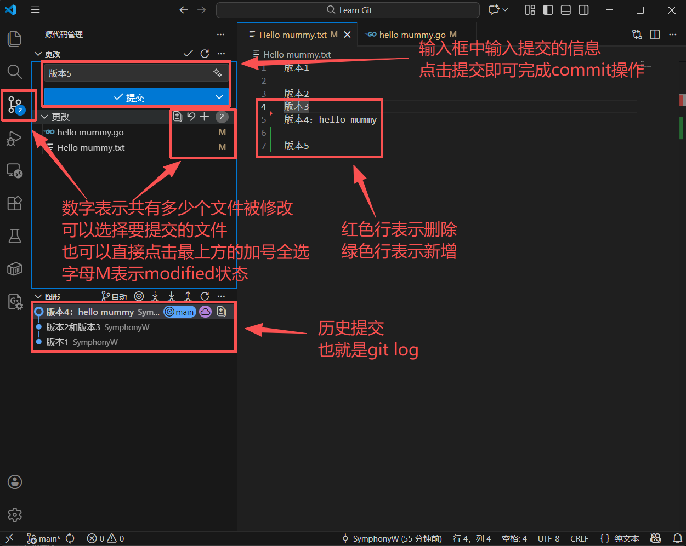
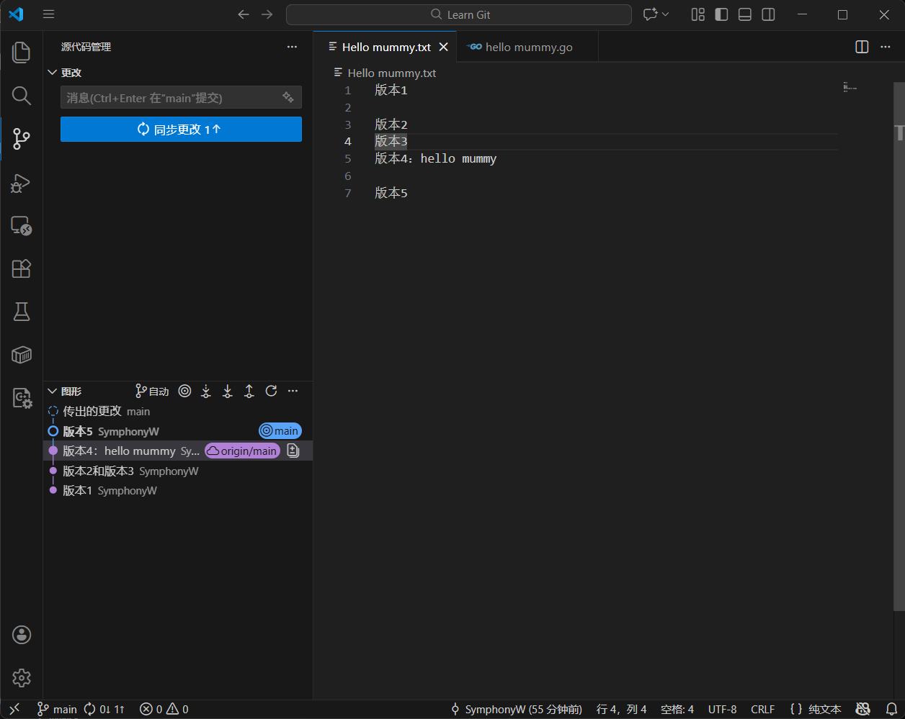
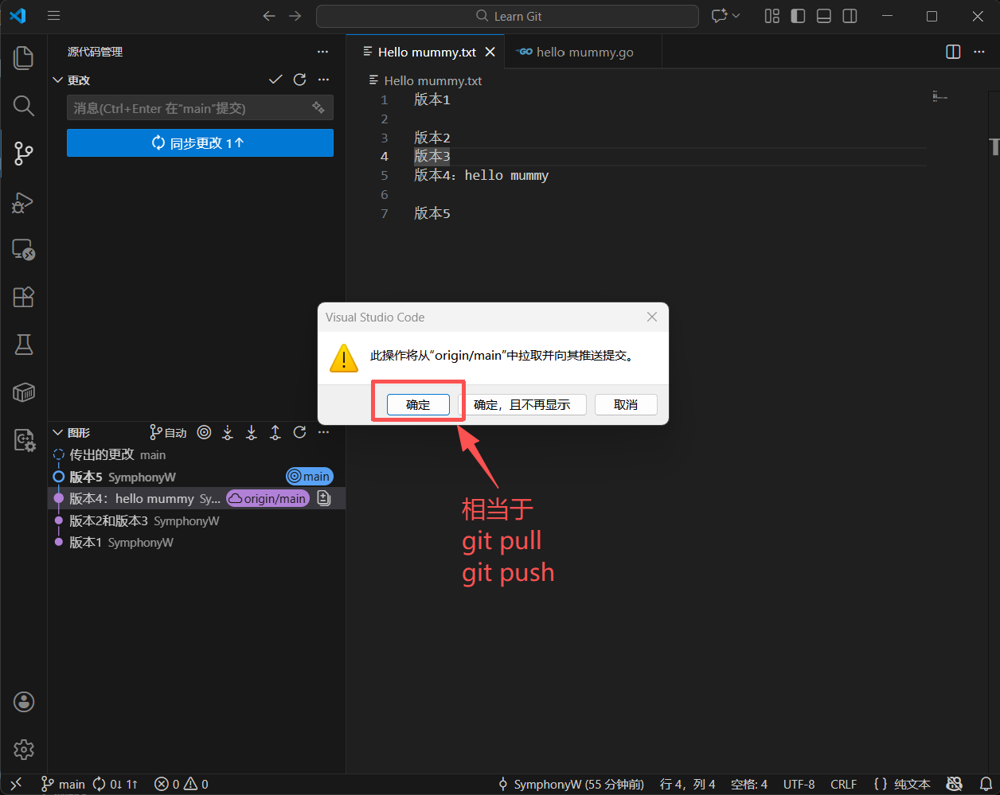
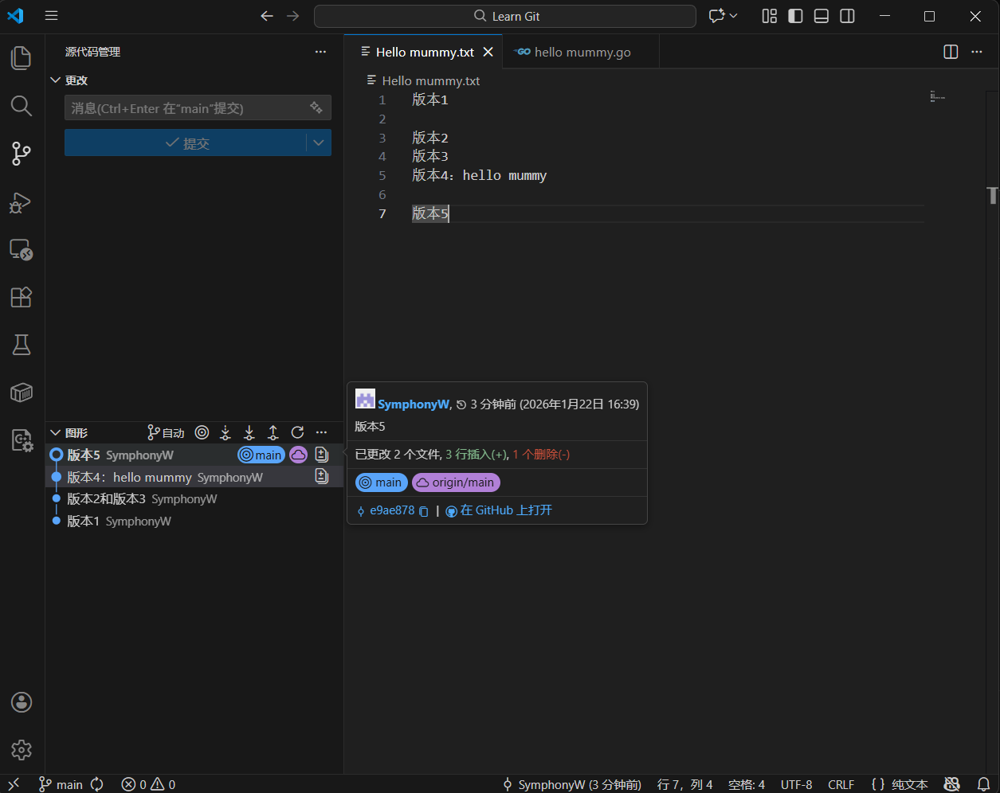
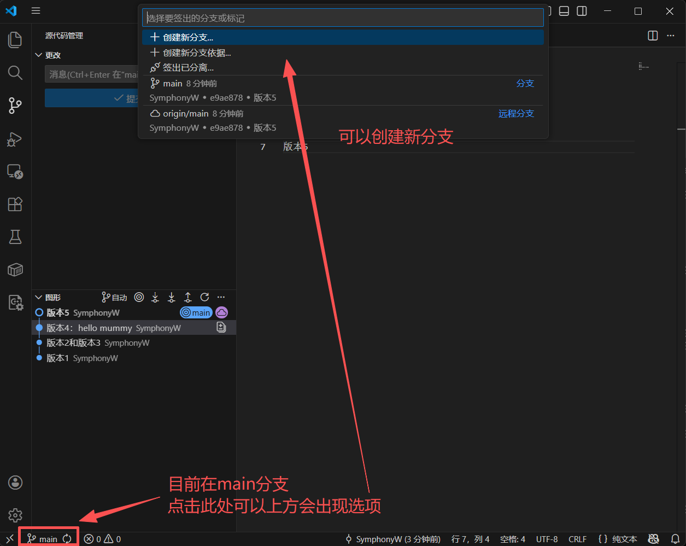
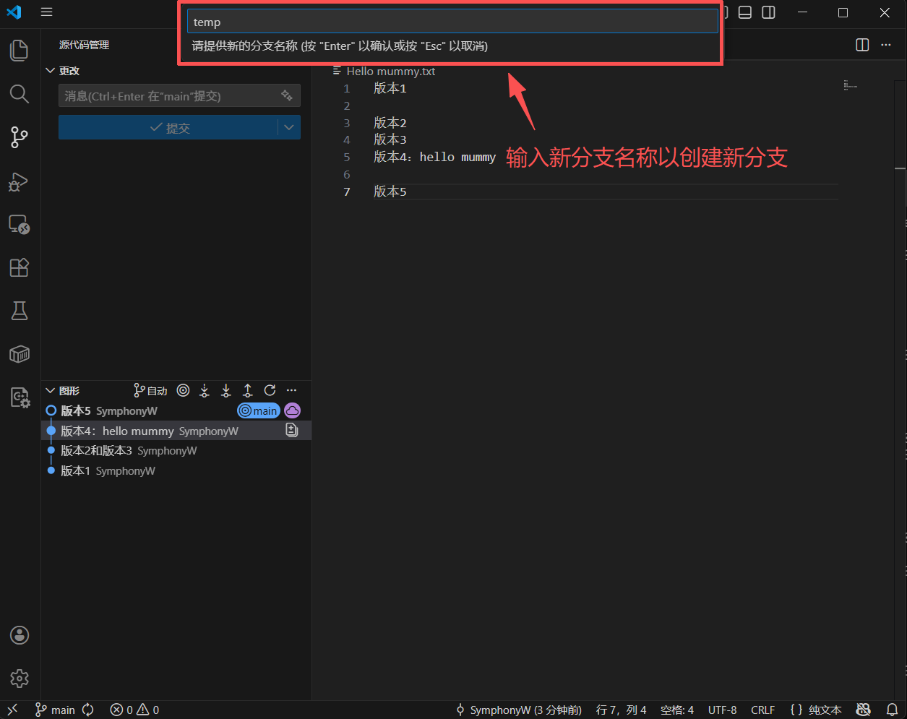
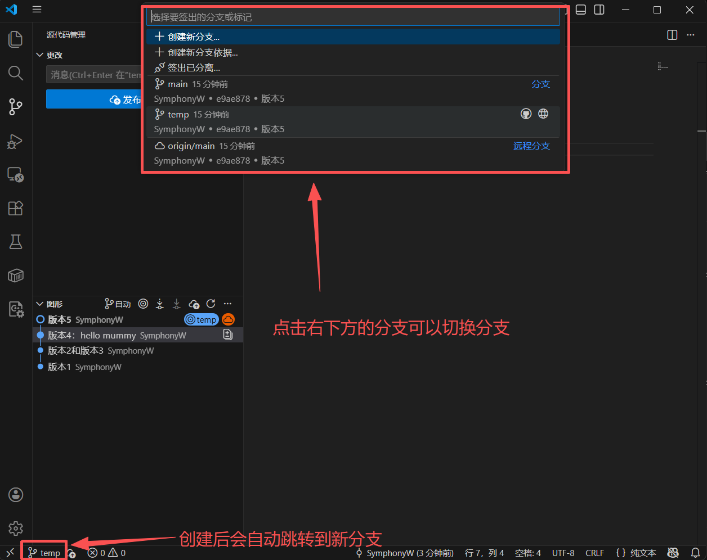

零基础Git超详细教程与原理
从 0 到 1，彻底搞懂 Git，不仅会用命令，更懂背后的原理，解决你所有 Git 痛点！
前言：为什么要学 Git？
作为程序员，Git 是你职业生涯中最基础、最重要、使用率最高的必备技能，没有之一。
无论是前端、后端、移动端还是运维，只要你涉及到代码开发、项目协作、版本管理，Git 都是绕不开的核心工具。
Git 能帮你解决什么问题？
-
代码回滚：写崩了？一键回到昨天能运行的版本
-
多人协作：多人开发同一个项目，不会互相覆盖代码
-
并行开发：同时开发多个功能，互不干扰，完成后再合并
-
追溯历史：谁改了代码、改了什么、什么时候改的，一目了然
-
数据安全：本地 + 远程双重备份，再也不用担心代码丢了
Git vs SVN：分布式的优势
很多人会问 Git 和老的 SVN 有什么区别，核心差异只有一个：
-
SVN（集中式）：所有代码存在中央服务器，本地只有当前版本，断网就无法提交
-
Git（分布式）：每个开发者本地都有完整的仓库，断网也能提交、回滚、看历史，联网后只同步差异，效率极高
环境准备：安装与全局配置
安装 Git 客户端
Git 是跨平台工具，Windows/Mac/Linux 都支持，安装极其简单，无脑下一步即可：
验证安装
安装完成后，打开终端 / Git Bash，输入命令：
|
|
如果显示类似 git version 2.43.0.windows.1 的版本号，说明安装成功。
全局配置（首次使用必做，只配一次）
Git 是分布式系统，每一次提交都会记录提交者的身份，所以你需要告诉 Git 你是谁。
打开终端，执行以下命令，替换成你自己的信息：
|
|
可选的优化配置
|
|
核心原理篇：搞懂这个，Git 就学会了一半
这是 Git 所有操作的底层逻辑，也是新手最容易混淆的知识点，一定要吃透！
Git 的三大核心区域
所有的 Git 命令，本质都是「在这三个区域之间转移文件」。
① 工作区（Working Directory）
-
就是你电脑上能看到的项目文件夹，你平时写代码、改文件，都是在这里操作
-
特点：所有修改都是临时的，Git 只知道你改了文件，但还没记录这个修改
② 暂存区（Staging Area / Index）
-
Git 的「中转站」，隐藏的缓存区域
-
作用：存放你确认要提交的修改，可以理解为「购物车」，把你要结账的东西先放进去
-
特点：暂存区的修改，Git 已经记录了，但还不是正式版本，可以随时撤回
③ 本地仓库（Local Repository）
-
Git 的核心仓库，用来永久保存版本和所有修改历史的地方
-
特点：只要提交到这里，就生成了一个不可丢失的版本，随时可以回滚、查看
三者的流转关系（必背）
|
|
Git 的存储原理：快照 vs 差异
这是 Git 和其他版本控制系统最核心的区别：
-
传统 VCS（SVN 等）：存储的是文件的差异，每次只记录你改了哪一行
-
Git：存储的是文件的快照，每次提交，Git 会给当时的所有文件拍一张照，存起来
-
如果文件没改，Git 不会重复存，只会存一个指向之前文件的链接
-
这就是为什么 Git 这么快，而且分支切换秒切的原因！
-
Git 的安全机制
Git 的本质是一个基于内容的键值对数据库：
-
所有数据在存储前都会计算 SHA-1 哈希值（40 位十六进制字符串）
-
哈希值由文件内容计算得出，内容不变则哈希值不变
-
这保证了数据的完整性：任何文件内容的篡改都会导致哈希值变化，Git 可以立即检测到
四大核心对象
Git 内部有四种基本对象类型，所有版本控制功能都基于这四种对象构建：
| 对象类型 | 作用 | 存储内容 |
|---|---|---|
| Blob | 存储文件内容 | 文件的二进制数据，不包含文件名、权限等元数据 |
| Tree | 存储目录结构 | 文件名列表 + 对应 Blob / 子 Tree 的哈希引用，以及文件权限 |
| Commit | 记录提交快照 | 根 Tree 哈希 + 父提交哈希 + 作者 / 提交者信息 + 提交说明 |
| Tag | 版本标记 | 指向特定 Commit 的引用，附带标签信息，常用于版本发布 |
对象关系示例
一次提交的构建过程：
-
修改文件后，
git add会生成新的 Blob 对象存储文件内容 -
git commit时，会生成 Tree 对象，记录当前目录下所有文件的引用 -
最后生成 Commit 对象，指向根 Tree，并记录父提交、作者等信息
对象存储方式
Git 对象有两种存储形态：
-
松散对象（Loose Objects）：新建的对象首先以单独文件的形式存储
-
目录结构：
.git/objects/xx/yyyyy...，其中xx是 SHA-1 前两位，剩余 38 位作为文件名 -
内容使用 zlib 压缩，节省空间
-
-
打包文件（Packfiles）：当仓库对象增多时，Git 会通过
git gc进行垃圾回收-
将多个松散对象打包成一个
.pack文件 -
对相似对象使用增量压缩（Delta Compression），大幅节省存储空间
-
配套的
.idx文件用于快速查找对象
-
引用机制（References）
为了方便用户定位提交，Git 引入了引用机制：
-
分支引用：存储在
.git/refs/heads/，本质是一个 40 字节的文件，保存了分支最新 Commit 的哈希- 创建分支仅需新建一个指针文件，成本极低
-
标签引用：存储在
.git/refs/tags/，指向特定的 Commit，用于标记版本 -
HEAD 引用：特殊的符号引用，指向当前所在的分支，例如
ref: refs/heads/main
基础操作篇：入门三板斧，每天都在用
初始化仓库
Git 项目都是从仓库开始的，有两种场景：
场景 1：本地新建项目，初始化仓库
如果你本地已经有一个项目，想让 Git 管理它：
|
|
执行后，项目里会出现一个隐藏的 .git 文件夹，这就是 Git 的核心仓库，不要手动修改 / 删除它！
场景 2：克隆远程仓库到本地
如果你想把 GitHub/Gitee 上的项目下载到本地：
|
|
克隆会自动帮你把整个仓库的历史、分支都下载下来，并且自动关联远程仓库。
入门核心三板斧
这三个命令是 Git 最基础、使用频率最高的，必须肌肉记忆！
1. git status：查看文件状态
这是你用得最多的命令，用来查看当前仓库的状态：
|
|
-
红色字体：文件已修改 / 新增，在工作区，还没加入暂存区
-
绿色字体：文件已加入暂存区，等待提交
-
working tree clean：工作区干净，没有修改
2. git add：把修改加入暂存区
把工作区的修改，放到暂存区，准备提交：
|
|
3. git commit：提交到本地仓库
把暂存区的修改，永久保存到本地仓库，生成一个新版本：
|
|
⚠️ 提交说明一定要清晰！不要写「改了点东西」「更新代码」这种无效说明，团队协作中这是基本素养。
查看提交历史
提交之后，所有版本都有记录，用 git log 查看：
|
|
退出 log 查看界面，按
q键即可。
救命神器：版本回滚与撤销修改
开发中最常见的场景：代码写崩了、改乱了、提交错了，这时候 Git 的撤销功能就是救命稻草！
所有撤销操作，都是围绕三个区域的，我们分场景来看：
场景 1：撤销工作区的修改（还没 git add）
你改了文件，但是改得乱七八糟，还没执行 git add，想恢复原样：
|
|
注意：这个命令会直接丢弃工作区的修改，不可逆，执行前一定要确认！
场景 2：撤销暂存区的修改（已经 git add，还没 commit）
你不小心把不需要的文件 git add 了，想把它从暂存区撤回来，但是保留工作区的修改：
|
|
这个命令很友好：只撤销暂存状态，不会删你工作区的代码，你可以改完重新 add。
场景 3：回滚本地仓库的版本（已经 commit 了）
你已经提交了，但是发现提交的代码有严重 bug，想回到之前的版本，这时候用 git reset，它有三种模式，面试必考！
首先，你需要找到要回滚到的版本的 commit id，用 git log --oneline 就能看到，是一串 7 位的哈希值。
|
|
三种模式的区别（必背）
-
–soft 软回滚
-
只回滚本地仓库的版本，暂存区和工作区的修改都保留
-
适用场景：提交错了，想改提交说明，或者把多个小提交合并成一个
-
-
–mixed 混合回滚（默认）
-
回滚本地仓库和暂存区，工作区的修改保留
-
适用场景：提交后发现代码有小问题，想改完重新提交
-
-
–hard 硬回滚（最常用）
-
回滚三个区域，所有修改全部丢弃，代码完全恢复到指定版本
-
适用场景：代码写崩了，想一键回到能运行的版本，救命首选！
-
快捷回滚上一个版本
不用写 commit id，直接用：
|
|
场景 4：撤销已经推送到远程的提交
如果你的提交已经 git push 到远程了，这时候不能用 git reset，因为会导致团队的版本不一致，推荐用 git revert：
|
|
核心区别：
-
git reset：删除历史提交，回滚版本 -
git revert：新增一个反向提交，抵消之前的修改，不会改变历史 -
这是团队协作中最安全的方式，不会影响其他同事的代码！
Git 的灵魂：分支管理
如果说版本回滚是 Git 的核心，那分支管理就是 Git 的灵魂！
分支的底层原理
很多人觉得分支很复杂，其实 Git 的分支超级简单：分支本质上，只是一个指向提交的轻量指针！
HEAD 指针是什么？
HEAD 是一个特殊的指针，它指向你当前所在的分支。
-
比如你在
master分支，HEAD 就指向master，而master指向最新的提交 -
当你创建新分支，Git 只是新建了一个指针文件，指向当前的提交，几乎零成本！
-
切换分支？Git 只是把 HEAD 的指向改了，然后把工作区的文件更新成对应提交的快照，所以秒切！
这就是为什么 Git 的分支这么快，这么轻量！
为什么要用分支？
分支就像「项目的平行宇宙」：
-
你可以在新的平行宇宙里开发新功能，完全不影响主项目的代码
-
哪怕你把新分支写崩了，主分支的稳定代码一点事都没有
-
功能开发完了，再把两个平行宇宙合并起来就好了
举个例子：
-
主分支
master是线上的稳定代码 -
你要开发支付功能，新建一个
feature/pay分支 -
在这个分支里随便改，改崩了也不怕，切换回主分支，代码还是好的
-
功能开发完测试通过了，再把
feature/pay合并到主分支
分支核心命令
|
|
分支冲突的解决
新手最怕冲突？别怕，冲突是正常的！
冲突怎么来的？
两个分支修改了同一个文件的同一行代码，Git 不知道该留哪个，就会触发冲突。
冲突怎么解决？三步搞定！
-
合并的时候，终端会提示
CONFLICT，打开冲突的文件 -
你会看到冲突标记：
1 2 3 4 5<<<<<<< HEAD （这是当前分支的代码） 这是主分支的代码 ======= 这是功能分支的代码 >>>>>>> feature/login （这是待合并分支的代码） -
手动修改，保留你要的代码，把冲突标记全部删掉
-
然后重新提交：
1 2git add 冲突的文件 git commit -m "解决冲突：合并登录功能代码"
就这么简单，冲突不可怕，手动改一下就好了！
大厂通用分支规范
团队协作，分支一定要有规范，不然会乱成一锅粥！主流的有两种：
1. Git Flow（中大型项目，经典规范）
把分支分成 5 类，各司其职：
-
master/main：主分支，永远是线上稳定版本，禁止直接开发 -
develop：开发主分支，所有功能都从这里拉，完成后合并回来 -
feature/xxx：功能分支，比如feature/pay，开发新功能用 -
bugfix/xxx：修复测试环境的 bug，从 develop 拉 -
hotfix/xxx：紧急修复线上 bug，从 master 拉，修复完合并回 master 和 develop
2. GitHub Flow（小团队 / 敏捷开发，极简）
如果团队小，迭代快，用这个就够了：
-
所有需求都从主分支拉一个新分支
-
开发完提 PR，代码评审后合并回主分支，然后删分支
核心：团队一定要统一规范，不管用哪种，统一就好！
团队协作：远程仓库操作
前面讲的都是本地仓库，实际开发中，我们都会把代码放到远程仓库（GitHub/Gitee/GitLab），用来备份和协作。
关联远程仓库
如果是你本地新建的仓库，需要先关联远程仓库：
|
|
如果是 git clone 下来的仓库，会自动关联，不用这一步。
核心远程命令
1. git pull：拉取远程代码
把远程的最新代码拉到本地，合并到当前分支：
|
|
每天上班第一件事，先
git pull，拉取同事的最新代码，避免冲突！
2. git push：推送本地代码
把本地的提交推送到远程仓库：
|
|
高级实用命令：从熟练到大神
这些命令平时用得少，但用一次就能救你一命，效率拉满！
git stash：临时暂存工作区
痛点：开发到一半，代码没写完，不想提交，但是要切换分支改 bug？
|
|
git cherry-pick：拣选提交
痛点：A 分支写了个功能，B 分支也想要，但是不想合并整个 A 分支？
|
|
精准复用代码，超级实用！
git rebase：变基，优雅的合并
git merge 合并会生成一个合并提交，历史会有分叉，而 rebase 可以让历史变干净：
|
|
原则：永远不要在公共分支上执行 rebase，只在自己的功能分支用！
git tag：版本标签
发布版本的时候，给当前版本打个标签，方便以后回溯：
|
|
.gitignore：忽略文件
项目里有很多不需要提交的文件，比如 node_modules、日志、IDE 配置、环境变量，你可以新建一个 .gitignore 文件，把这些写进去，Git 就会自动忽略它们：
|
|
注意：如果文件已经被 add 过了，再写进 .gitignore 是无效的，需要先执行
git rm --cached 文件名把它从暂存区删掉。
避坑宝典：Git 万能后悔药
新手最常踩的 8 个坑
-
❌ 提交信息乱写 → 要写清晰的说明
-
❌ 直接在 master 分支开发 → 永远在功能分支开发
-
❌ add 了不需要的文件 → 用
git reset HEAD 文件名撤回 -
❌ 提交错了分支 → 用
cherry-pick把提交复制过去 -
❌ pull 遇到冲突就放弃 → 按步骤手动解决
-
❌ 删了分支找不回 → 用
reflog -
❌ 把密码提交到仓库 → 用
revert撤销，然后加到 .gitignore -
❌ reset –hard 后代码丢了 → 用
reflog找回！
万能救星：git reflog
这是 Git 最强大的命令，没有之一，所有误操作都能救！
git reflog 会记录你在本地的所有 Git 操作，不管是提交、回滚、删分支、reset，全部都有记录，永不丢失！
|
|
不管你是误删了分支，还是误执行了 reset --hard，只要找到你操作前的那个 ID，执行：
|
|
你的代码就全部回来了！
只要你的代码曾经提交过，就永远不会丢，这就是 Git 的安全！
效率神器：配置别名
Git 命令太长？配置别名，一秒变短：
|
|
配置完之后，用起来爽到飞起！
面试高频考点总结
v1.0 版本的 Git 基础知识点总结，面试官最喜欢问的 10 个问题。
-
Git 的三大区域是什么？ 工作区、暂存区、本地仓库
-
git reset 的三种模式区别？ –soft 只回滚仓库；–mixed 回滚仓库和暂存区；–hard 全部回滚
-
git reset 和 git revert 的区别？ reset 删除历史，revert 新增反向提交，不改变历史，团队协作用 revert
-
git merge 和 git rebase 的区别？ merge 有分叉，生成合并提交；rebase 线性历史，更干净
-
分支冲突的原因和解决方法？ 同一文件同一行被修改，手动解决冲突后重新提交
-
git stash 的作用？ 临时暂存工作区的修改，方便切换分支
-
.gitignore 的作用？ 忽略不需要提交的文件
-
多人协作如何避免冲突？ 每天拉最新代码，拆分分支，规范提交
-
提交到远程后发现 bug 怎么处理？ 用 git revert 撤销提交
-
代码丢了怎么找回？ 用 git reflog 查看操作记录，reset 恢复
补充：
基础概念类
Q1: Git 和 SVN 的核心区别是什么？
A：
-
Git 是分布式版本控制系统，每个开发者都有完整的仓库历史；SVN 是集中式，只有中央服务器有完整历史
-
Git 采用快照存储，每次提交保存完整项目状态；SVN 采用差异存储，仅保存文件变更
-
Git 支持离线提交、分支操作等绝大多数本地操作；SVN 大部分操作需要联网
-
Git 分支是轻量级指针，创建切换极快；SVN 分支是目录拷贝，成本较高
Q2: 工作区、暂存区、版本库的区别？
A：
-
工作区：本地编辑的文件目录，用户直接修改的地方
-
暂存区：临时存储区域，保存了准备提交的修改，是工作区到版本库的缓冲
-
版本库：Git 的核心数据库，存储了项目的所有版本历史，提交后数据永久保存
Q3: git pull 和 git fetch 的区别？
A：
-
git fetch：仅拉取远程仓库的更新到本地远程分支，不修改当前工作区，是安全的只读操作 -
git pull：等价于git fetch + git merge，拉取更新后自动合并到当前分支，可能产生冲突
分支与合并类
Q4: merge 和 rebase 的区别？
A：
-
merge：将两个分支的历史合并，会生成一个新的合并提交，保留完整的分支合并历史，适合公共分支
-
rebase：将当前分支的提交 “移植” 到目标分支的顶端，重写提交历史，得到线性的提交记录，适合个人特性分支整理
-
注意：不要对已经推送到远程的公共分支使用 rebase，会导致团队成员的历史混乱
Q5: 分支合并冲突如何处理？
A：
-
通过
git status查看冲突文件 -
手动编辑冲突文件，删除 Git 插入的冲突标记（
<<<<<<<、=======、>>>>>>>），保留正确的代码 -
执行
git add <冲突文件>标记冲突已解决 -
执行
git commit完成合并提交
Q6: 什么是 Fast-forward 合并？
A：当目标分支是当前分支的直接祖先时，Git 不需要创建新的合并提交，只是简单地将目标分支的指针移动到当前分支的最新位置，这个过程就是快进合并。
撤销与回滚类
Q7: git reset 和 git revert 的区别？
A：
-
git reset：移动分支指针，会重写历史，会删除后续的提交，适合本地未推送的提交回滚-
--soft：仅撤销提交，修改保留在暂存区 -
--mixed：撤销提交，修改保留在工作区（默认） -
--hard：彻底撤销提交和所有修改，数据可能丢失
-
-
git revert：创建一个新的提交，来抵消目标提交的修改，不会修改历史，适合已经推送到远程的公共提交，是安全的回滚方式
Q8: 如何撤销工作区的修改？
A：
-
旧版命令：
git checkout -- <file> -
新版命令：
git restore <file> -
撤销所有工作区修改：
git checkout -- .或git restore .
Q9: 如何撤销暂存区的修改？
A：
-
旧版命令：
git reset HEAD <file> -
新版命令：
git restore --staged <file>
Q10: 什么是 git stash？如何使用？
A：
-
git stash用于临时保存工作区未提交的修改，让工作区回到干净状态，方便切换分支处理其他任务 -
常用操作：
-
git stash：保存当前修改 -
git stash list：查看保存的 stash 列表 -
git stash pop：恢复最近的 stash 并删除它 -
git stash apply：恢复 stash 但保留记录
-
故障处理类
Q11: 如何恢复误删的分支？
A： 通过 reflog 找回删除的提交：
|
|
Q12: 提交后发现写错了提交信息，怎么修改？
A：
-
如果是最后一次提交，未推送：
git commit --amend，可以修改最后一次的提交信息 -
如果是多个历史提交，需要用交互式变基：
git rebase -i HEAD~n，将需要修改的提交标记为 edit，然后修改后继续
工作流类
Q13: 你了解 Git Flow 工作流吗？
A： Git Flow 是一种经典的分支管理策略，定义了不同分支的用途：
-
main/master：主分支，存储生产环境的稳定代码 -
develop：开发分支，集成了所有功能的开发代码 -
feature/*：特性分支，从 develop 分出，用于开发新功能 -
release/*：发布分支，从 develop 分出，用于准备版本发布 -
hotfix/*：热修复分支，从 main 分出，用于修复线上紧急 bug
Q14: 如何将多个提交合并为一个？
A： 使用交互式变基：
|
|
原理深入类
Q15: Git 是如何存储数据的？
A：
Git 本质是一个内容寻址的键值数据库，核心是四大对象：Blob、Tree、Commit、Tag。所有对象通过 SHA-1 哈希唯一标识，存储在 .git/objects 目录。每次提交保存完整的项目快照，未修改的文件复用原有对象，通过 zlib 压缩和 pack 文件优化存储。
Q16: 为什么 Git 的分支这么轻量？
A： 因为 Git 的分支本质上只是一个指向 Commit 的 40 字节的指针文件。创建分支仅需新建一个小文件，不需要拷贝整个目录，所以创建和切换都极其高效。
关于VS Code 的 Git
VS Code 深度集成使用指南 (GUI Tips)
在 VS Code 界面操作 Git 时，请注意以下细节：
界面元素拆解
- 侧边栏数字：显示当前尚未提交的变更文件数量。
- 文件列表图标：
- + (加号)：点击它相当于 git add，将文件移入“暂存的更改”。
- - (减号)：取消暂存，回到工作区。
- ⟲ (箭头)：丢弃更改（慎用！等同于 checkout --），会把你没保存的代码彻底删掉。
- 蓝色的“同步更改”按钮：执行的是 git pull 后紧接 git push。如果远程有冲突，此按钮会报错，建议先手动 Pull。
可视化冲突解决 (Merge Editor)
当发生冲突时，VS Code 会提示“在合并编辑器中打开”：
- 上方两个窗口：左边是“远程的改动”，右边是“你本地的改动”。
- 下方窗口：最终合并后的结果。
- 勾选框：你可以直接勾选想要保留的代码行，VS Code 会自动生成合并后的文件，比手动删 <<<<<<< 标记快得多。
原子化提交 (Partial Commit)
- 选中行提交：如果你在一个文件里写了两个功能，只想提交其中一个。在代码行号左侧点击右键，选择“暂存选定的范围”。这能实现比命令行更精细的版本控制。
多仓库管理 (Multi-root Repos)
- 如你截图中所示，VS Code 支持同时管理多个仓库。请确保在点击顶部的“√ (Commit)”图标前，选中的是正确的仓库分支，避免把博客的改动提交到了公共网页仓。
核心注意事项与最佳实践
- 善用 .gitignore：
- 在根目录创建 .gitignore 文件。
- 必须忽略的东西：编译产生的二进制文件、临时文件夹（如 public/、node_modules/）、敏感信息（.env）。
- 一旦文件被忽略，VS Code 侧边栏那“几百个变更”就会消失，让界面清爽。
- 强制推送的禁忌：
- 在界面上右键点击“Push (Force)”是极度危险的操作。除非你是在修复自己的私人分支，否则严禁覆盖公共 main 分支。
- 提交前先拉取 (Pull before Commit)：
- 养成习惯，在开始写代码前先点一下左下角的刷新图标。确保你的代码是基于最新版本编写的，能减少 90% 的合并冲突。
- 推荐插件：GitLens：
- 安装后，点击代码行可以看到“是谁在什么时候改了这一行”，这在团队协作（或回溯自己两周前写的 Bug）时非常有帮助。
- 查看 Timeline 视图：
- 在 VS Code 文件资源管理器下方有一个 Timeline 栏。它可以让你看到单个文件的详细历史演变，即使你没有在 Git 视图里，也能快速找回之前的代码片段。
VS Code 文件状态标识详解 (File Status Indicators)
在 VS Code 的文件资源管理器或 Git 侧边栏中，文件名后面的字母和颜色代表了该文件的当前 Git 状态：
| 标识 | 完整名称 | 颜色 (默认) | 含义 |
|---|---|---|---|
| U | Untracked | 绿色 | 未追踪。这是一个新创建的文件，Git 还没有开始记录它的历史。 |
| M | Modified | 黄色/橙色 | 已修改。该文件在仓库中已存在，但你对它的内容做了改动。 |
| A | Added | 绿色 | 已添加。你执行了 git add，该文件已被放入暂存区，等待提交。 |
| D | Deleted | 红色 | 已删除。该文件已被删除，Git 记录了这一删除操作。 |
| R | Renamed | 绿色 | 重命名。你修改了文件名，Git 自动识别到了这一变动。 |
| C | Copied | 绿色 | 已复制。文件被复制了一份。 |
| ! | Ignored | 灰色 | 已忽略。该文件匹配了 .gitignore 的规则，Git 不会追踪它。 |
| S | Submodule | - | 子模块。该文件夹是一个嵌套的其他 Git 仓库。 |
状态组合示例：
- 文件名显示为红色且带 D：你删除了一个受版本控制的文件。
- 文件名显示为黄色且带 M：你修改了代码，但还没点那个 + 号（add）。
- 文件名显示为绿色且带 A：你点了 + 号，这行改动现在躺在暂存区里。
VS Code版本控制操作示例
基本操作与界面解释

VS Code界面各部分所代表的意思
提交后
拉取并推送
完成分支相关操作

创建新分支
输入分支名完成创建
切换分支最后：Git 学习心法
-
理解原理，不要死记硬背：所有命令都是围绕三大区域和分支的，懂了原理，命令无师自通
-
多用多练，犯错不可怕：Git 有 reflog 这个后悔药，你尽管试，错了也能找回来
-
先核心，再高级：先把 add、commit、push、pull、branch、merge 这些核心命令掌握，解决 80% 的问题，再学高级命令
Git 不仅是一个工具，更是一种开发思维，掌握了它，你的开发效率会翻倍，协作会更顺畅！